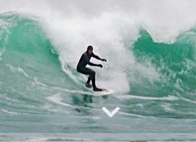

Surfing page
Listen up, beach bums and surfer dudes! Scotland’s golden sandy beaches, beautiful clear waters and isolated locations add up to one of Europe’s top surfing destinations. Surrounded by Atlantic and North Sea swells throughout the year, you are guaranteed to catch some great waves.

Surfing in Scotland
Here are a few suggestions for surfing in Scotland
- Surfing - From the northerly tip of the Scottish mainland to the long, varied and sheltered coastlines of the east coast, the Scottish surf scene is frequented by all types of surfers, from complete beginners to wave-riding professionals. If you are looking to rent equipment, surf schools will provide you with everything you need including wetsuits and boards.
- Windsurfing - A thrilling combination of surfing and sailing, this sport requires wind power, balance and a love for speed. The weather conditions in Scotland are perfect for windsurfing and there are plenty of opportunities to learn this exciting and addictive sport both inland and down by the coast.
- Stand up paddle boarding - Enjoy an unparalleled sense of freedom as you glide along waters while on a stand up paddleboard, with paddle in hand. This sport can be experienced in a number of stunning locations across the country, and will give you a unique, on-the-water perspective of Scotland.
Return to Home page